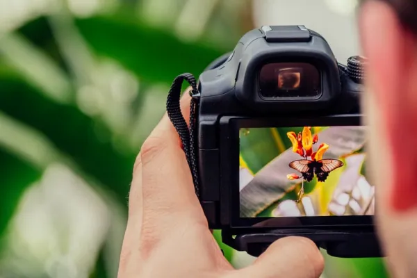

Fotografi

Menurut Pundra Rengga Andhita dalam bukunya yang berjudul "Komunikasi Visual" (2021), kata "fotografi" berasal dari bahasa Yunani, yaitu "photos" yang berarti cahaya dan "grafos" yang berarti menggambar atau melukis. Fotografi merupakan suatu metode untuk menciptakan gambar atau foto yang dapat mengabadikan momen, baik untuk keperluan produksi berita, periklanan, promosi, atau tujuan lainnya.
Dalam dunia fotografi, elemen yang sangat krusial adalah cahaya. Tanpa adanya cahaya, akan sangat sulit untuk menciptakan hasil foto yang dapat diproduksi dan dilihat. Cahaya adalah kunci utama dalam proses fotografi yang memungkinkan penangkapan gambar yang memukau dan bermakna.